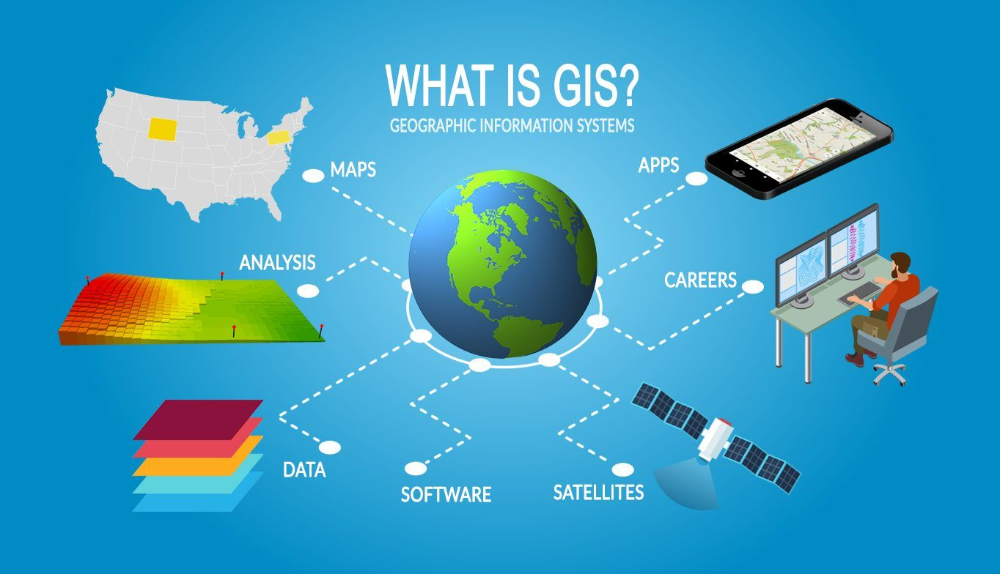

CRP 4080
Introduction to GIS for Planners
Cornell University, Fall 2022

Image
source
Course Info
Canvas
Site
Lectures Time: TBD
Lab Sessions: TBD
Instructor:
TA:
Office hours:
Grading:
Course description
Learning outcomes
By the end of this course, students will be able to:
- Feel comfortable working within the GIS environment and be familiar
with a range of available tools and methods to address planning related
problems and issues.
- Independently apply appropriate GIS techniques to analyze and think
critically about complex urban and regional issues; and use online
resources and software documentation to learn new GIS techniques when
necessary.
- Create original knowledge regarding urban and regional issues using
GIS methodologies.
- Communicate spatial information effectively using maps (visual
communication) and connect visual communication to expository writing
and argumentation.
- Examine and be able to apply spatial statistical and qualitative
knowledge of urban and regional issues.
- Produce and interpret maps and other forms of spatial information
found in professional planning reports, research articles, news media,
and public forums.
Prerequisites
Course format
Evaluation
Course materials
Code of conduct
We are dedicated to providing a welcoming and supportive environment
for everyone, regardless of background, identity and prior experience
level. Everyone in this course will be coming from a different place
with different experiences and expectations. We will not tolerate any
form of language or behavior used to exclude, intimidate, or cause
discomfort. This applies to all course participants (instructor,
students, guests). In order to foster a positive and professional
learning environment, we encourage the following kinds of behaviors:
- Use welcoming and inclusive language
- Be respectful of different viewpoints and experiences
- Gracefully accept constructive criticism
- Show courtesy and respect towards others
- Help each other - you may well learn something or reinforce your own
skills in the process
Student accommodations
In compliance with the Cornell University policy and equal access
laws, we are available to discuss appropriate academic accommodations
that may be required for student with disabilities. Requests for
academic accommodations are to be made during the first two weeks of the
course, except for unusual circumstances, so arrangements can be made.
Students are encouraged to register with Student Disability Services to
verify their eligibility for appropriate accommodations.
Tentative schedule
Subject to change